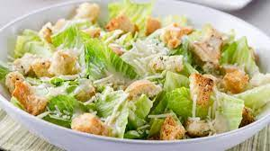

Pay de Queso

Ingredientes:
- 1 Lata de Leche Condensada.
- 1 Lata de Leche (Media Crema Nestlé).
- 6 Huevos.
- 1 Paquete de Galletas Marías.
- 1 Barrita de mantequilla.
- 5 Cucharadas de Leche.
- 2 Quesos Crema.
Elaboración:
Paso 1: Preparar la base
Se ponen las galletas en la licuadora para hacerlas polvo, después se ponen en un refractario y se le agrega la mantequilla y la leche y se mezcla hasta hacer una masa. Luego se extiende en un molde para pay.
Paso 2: Preparar el relleno
En la licuadora se agrega la media crema, la leche condensada, los huevos y el queso se licuan y se ponen sobre la base de galletas. y se lleva al horno.
